EcoLact / Arquitectura de software
Comunicación mediante API REST
Un contrato HTTP y JSON entre móvil y servidor
La app usa Ktor para comunicarse con rutas versionadas de Laravel. Los endpoints adaptan las solicitudes al modelo del backend y devuelven datos o errores; no exponen acceso directo a la base de datos.
Recorrido de una solicitud API
La cadena muestra responsabilidades. Los middleware adicionales, como asistencia o idempotencia, dependen del endpoint. Las rutas v1 de routes/api.php se montan bajo /api desde la configuración de Laravel.


Consultar la fuente editable
flowchart TB
A[Aplicación KMP] --> K[Ktor Client]
K --> API[API REST: /api/v1]
API --> M[Middleware: sesión, estado y rol]
M --> R[Form Request y autorización Gate]
R --> C[Controller]
C --> U[Use Case]
U --> RE[Contrato Repository]
RE --> E[Adaptador Eloquent]
E --> DB[(Persistencia central)]
C -. respuesta JSON y estado HTTP .-> K
classDef default fill:#eaf3ff,stroke:#79a4df,color:#103b86,rx:7,ry:7;
Organización y transporte
Existen grupos admin, acopiador, calidad, planta, ventas y proveedor, con restricciones de rol y estado de cuenta. Login está disponible antes de la autenticación; logout y me están bajo auth:sanctum. La existencia de un endpoint no demuestra una pantalla móvil equivalente.
HttpClientFactory configura el motor específico de plataforma, serialización JSON, URL base y Bearer desde SessionManager. Usa expectSuccess = false: las funciones de lectura de respuesta interpretan explícitamente el estado HTTP. Muchas respuestas se envuelven en data; otras operaciones devuelven solo message, por lo que existen toEnvelopeData() y requireSuccess().
Ejemplo real de contrato: registrar entrega
Endpoint implementado: POST /api/v1/acopiador/entregas. El siguiente ejemplo es ilustrativo: el DNI, la clave y el token son valores de ejemplo, no datos ni credenciales reales.
POST /api/v1/acopiador/entregas
Authorization: Bearer TOKEN_DE_SESION
Content-Type: application/json
Accept: application/json
Idempotency-Key: ejemplo-operacion-local-001
{
"metodo_identificacion": "DNI",
"identificador": "12345678",
"litros": 12.5,
"fecha_hora_evento": "2026-10-28T06:20:00-05:00",
"observacion": "Ejemplo documental"
}
El identificador debe corresponder a un proveedor real y habilitado en una ejecución efectiva. El actor no se envía como acopiador_user_id: se obtiene del usuario autenticado. StoreEntregaMovilRequest toma la clave desde la cabecera y admite la hora del evento; la validación impone formato y límites antes del caso de uso.
Al aceptar, el controlador devuelve 201 con una entrega serializada dentro de data, que incluye su identificador, litros, estado y fechas. fecha_hora representa el evento de campo; fecha_registro, su llegada al servidor. El ejemplo no se ejecutó contra el sistema.
Errores que la app puede interpretar
| HTTP | Interpretación en el cliente |
|---|---|
| 401 | No autorizado: clase Unauthorized |
| 403 | Prohibido; puede incluir el código ASISTENCIA_REQUERIDA |
| 404 | Recurso no encontrado |
| 409 | Conflicto |
| 422 | Validación, con mensaje y errores por campo cuando existen |
| 5xx | Error de servidor |
| Otros no exitosos | Error Unknown según el adaptador |
La API de entregas convierte DomainException e InvalidArgumentException a 422. No se generaliza ese mapeo a todas las rutas: el manejador de sincronización de cada funcionalidad determina qué resultado va a revisión o a reintento. Versionar y centralizar el transporte reduce acoplamiento, pero no elimina la necesidad de mantener compatibles los contratos JSON.
Evidencias de implementación
Las referencias identifican código revisado. El área de imagen está preparada para la captura manual del archivo indicado; el marcador visual no constituye una captura de la implementación.
Cliente HTTP compartido
La fábrica configura el motor de plataforma, JSON y la cabecera de la sesión actual.

Qué demuestra. Ktor concentra configuración de transporte. La autorización Bearer se añade desde SessionManager.
Archivo de imagen: api-ktor.png · Abrir imagen
Ubicación en GitHub: EcoLactMobile/shared/src/commonMain/kotlin/pe/edu/upeu/ecolactmobile/core/network/HttpClientFactory.kt
Fragmento sugerido para la captura: líneas 15–35 de la revisión documentada.
Rutas versionadas por rol
La API agrupa endpoints del acopiador y protege sus escrituras con la comprobación de asistencia.

Qué demuestra. El registro de entregas existe dentro del prefijo v1, bajo autenticación y restricciones de rol.
Archivo de imagen: api-rutas.png · Abrir imagen
Ubicación en GitHub: EcoLactWeb/routes/api.php
Fragmento sugerido para la captura: líneas 144–162 de la revisión documentada.
Fuentes adicionales y alcance de la revisión
Revisión estática del repositorio local: 28 de octubre de 2026. Enlaces a la revisión 75901337489d; la existencia de cada archivo y los fragmentos sugeridos se comprobaron localmente. No se ejecutaron servicios de negocio ni se verificó un despliegue.
- EcoLactWeb/routes/api.php
- EcoLactWeb/bootstrap/app.php
- EcoLactWeb/app/Http/Requests/Entrega/StoreEntregaMovilRequest.php
- EcoLactWeb/app/Http/Controllers/Api/Acopiador/EntregaController.php
- EcoLactWeb/app/Http/Controllers/Api/Acopiador/Concerns/SerializaEntregasAcopiador.php
- EcoLactMobile/shared/src/commonMain/kotlin/pe/edu/upeu/ecolactmobile/feature/acopiador/AcopiadorApi.kt
- EcoLactMobile/shared/src/commonMain/kotlin/pe/edu/upeu/ecolactmobile/core/network/ApiResponseHandling.kt